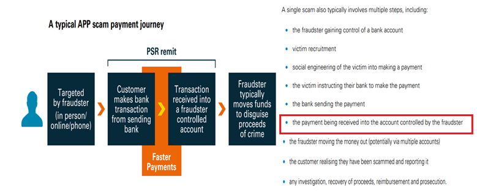

The digitization of the global economy has been matched by a growing threat from economic criminals. As technology develops, there has been a proportionate increase in online and technology-enabled fraud. Digitalization has allowed fraud to become “industrialized”.
Online Payment Fraud describes fraud conducted using online services and digital technology. Fraudsters may use emails, websites, malicious software or other digital tools to steal personal details or money. On-line Payment Fraud is often cyber-enabled, which happens when technology like computers and networks are used to advance the fraud.
Online Payment Fraud is the most commonly experienced crime in many countries already, criminals turn to Online Payment Fraud because it can be conducted cheaply, at pace and without fear of likely or successful prosecution.
The scale and volume of Online Payment Fraud is complex to measure and difficult to compare with fraud rates in other countries. Data appears scarce and is compounded by challenges linked to under-reporting. However, estimates of the impact of other types of fraud by country do exist. Using the Global Anti-Scam Alliance data, there was an estimate of US$55.3billions lost in online payment fraud worldwide in 2021, which represents a 17% increase from 2020.
Corporate Treasurers are top target for cyber-criminals because it’s where the money is. Treasury’s trove of personal and corporate data, its authority to make payments and move large amounts of cash quickly make it an appealing choice for discerning fraudsters.
Treasurers manage technology-heavy infrastructure that sits outside the IT department. They feel more vulnerable than ever and while cloud-based integrated systems have delivered efficiencies, they have also created new risks. The main threats for Corporate treasurers are:
Fraud is defined as follows:

When making a forensic analysis of the 3 main types of fraud mentioned above, we discover that in all cases the transfer is requested by a fraudster impersonating a trusted company and the funds can be hard to recover due to its seemingly authorized status. Since bank transfers are executed just with a valid IBAN or bank account number, other factors stated in the payment order like Beneficiary Name, LEI, Country, Address, etc, will not be considered by the bank receiving the funds.

Automated Confirmation of Payee is a bank account and name checking service. When setting up a new payment, the bank MUST check also the name of the company, against the actual name held on the account.
Recognized as a particularly valuable tool in combatting fraud, confirmation of payee (CoP) is designed to stop online payment fraud and accidentally misdirected payments by simply checking whether the name of the payee's account matches the name and account details provided by a payer.
The European Payments Council recommends in its Payments Threat and Fraud Report to implement CoP services for mitigating this type of authorized pushed payments fraud. The European Central Bank also recommends implementing both a centralized and harmonized scheme for a pan-European IBAN-NAME check. EAB CLEARING is announcing that they will enrich SEPA payments by implementing a Fraud Pattern and Anomaly Detection solution which will include CoP.
Automated CoP has been successfully implemented in UK by Payment System Regulator, in the Nordics by the Nordic Payment Council, in the Netherlands by the AFM, with nearly 99.5% of domestic payments being subject to a CoP-style check, which validates the international bank account number (IBAN) and is known as the "IBAN name check”. In the EU has been proposed only for Instant Payments so far.
CoP has proven to be an effective tool for preventing fraud, In the Netherland, just 9 months after implementation, they reported a 70% drop in invoice fraud and 50% less transfers to the wrong account. But unfortunately, this only applies to domestic payments. We, Corporate Treasurers, need to advocate for a broader adoption of CoP all across Europe and eventually all across the world. Not only for Instant and Domestic Payments but also for Cross Border Payments.
We must challenge our banks and request this extra safety net for a safer on-line payment environment.
Guillermo De La Fuente
Member Board Of Directors
ACTSR (Association of Corporate Treasurers Suisse Romande)
.png "The LEI: Unlocking the Benefits of a Secure Payments Ecosystem for Corporate Treasurers")
The EACT has been advocating for a digital identity for Corporates for many years now. We believe that, Corporates, like individuals, must have a single identity which help them to identify itself and identify third parties as well in this digital era.
Read.png "LkSG Relevant for Treasury on a Case-by-case Basis")
The Supply Chain Due Diligence Act (LkSG) creates the legal framework to improve the protection of the environment and human rights along German supply chains. GACT spoke to Dr. Julia Sitter (White & Case LLP) about the relevance and need for action by treasury departments.
Read.png "CMU, The Come-Back!")
The Capital Market Union, which was one of the main objectives of the Vander Leyen Commission, is back in the limelight, and is likely to become a priority for the next Commission next summer.
Read.png "What Will be the Corporate Treasurer's Priorities for 2024?")
General insights into the common priorities of corporate treasurers that will still be relevant in 2024.
Read.png "Counterparty Risk Assessment by Treasurers")
François Masquelier lists some comprehensive steps to best assess counterparty risks.
Read